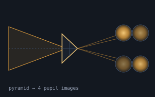
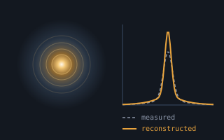
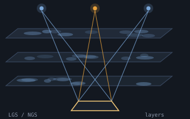
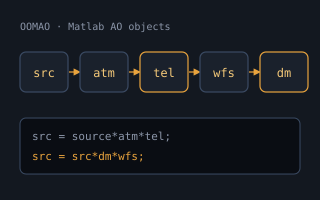
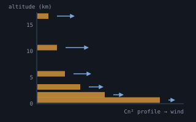
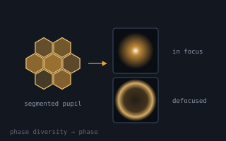

Research & Development

We develop ideas on:

Post-processing of partially corrected AO data for the reconstruction of the PSF is an extremely complex task, already in classical AO, let alone wide-field. We’re developing software classes to:

Turn-key AO requires robustness to operate 100% of the time at full performance. New processing architectures are needed to tackle the curse of dimensionality (scaling with the fourth power of the telescope diameter D⁴) while making efficient use of combined LGS and NGS measurements in any of the WFAO modes. We’re acquiring expertise and leading efforts in:

We support the development of OOMAO, an object-oriented Matlab Adaptive Optics library. Objects from the different classes are assembled to perform the numerical modelling of adaptive-optics systems; OOMAO can be seen as an extension of the Matlab language, with overloaded operators used to propagate the wavefront through the system and update object properties.
It’s licence-free and free-of-charge. As a future user, you’re welcome to add to it and become an official co-developer — drop me an email.

Atmospheric parameter identification is paramount for the runtime optimisation of tomography and the post-processing of AO telemetry.

As part of our running collaborations, we hosted Masen Lamb, PhD student at UVic, for 4 months (Mar–Jun 2016) to develop phase-diversity algorithms for AO systems calibration. These are now being applied to: